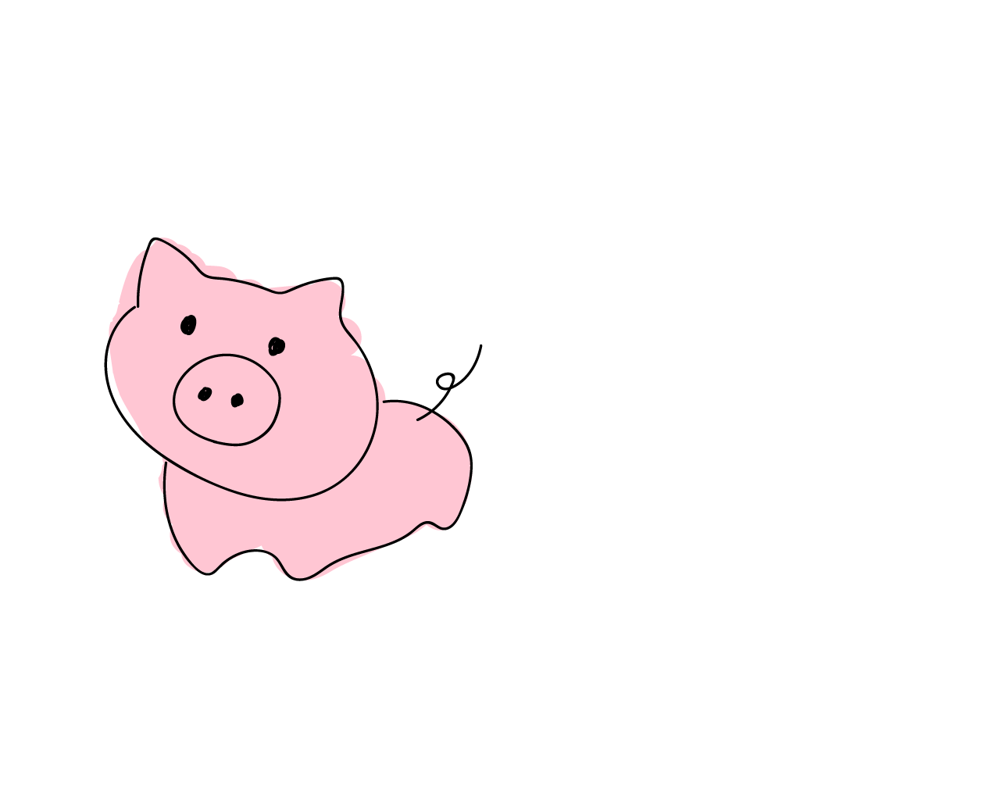
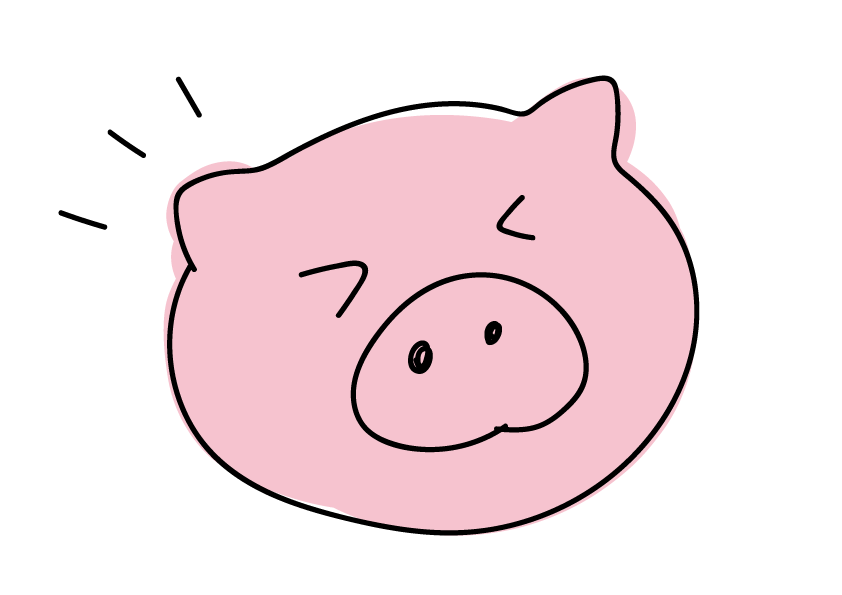

フードファイターによるフードファイターのためのサポートサイトです。
ぜひ有効活用してください！
都道府県
北海道
青森県
岩手県
宮城県
秋田県
山形県
福島県
茨城県
栃木県
群馬県
埼玉県
千葉県
東京都
神奈川県
新潟県
富山県
石川県
福井県
山梨県
長野県
岐阜県
静岡県
愛知県
三重県
滋賀県
京都府
大阪府
兵庫県
奈良県
和歌山県
鳥取県
島根県
岡山県
広島県
山口県
徳島県
香川県
愛媛県
高知県
福岡県
佐賀県
長崎県
熊本県
大分県
宮崎県
鹿児島県
沖縄県
★
★
★
★
★

NEXT
NEXT
NEXT
NEXT
REPORT
和食
洋食
中華
その他